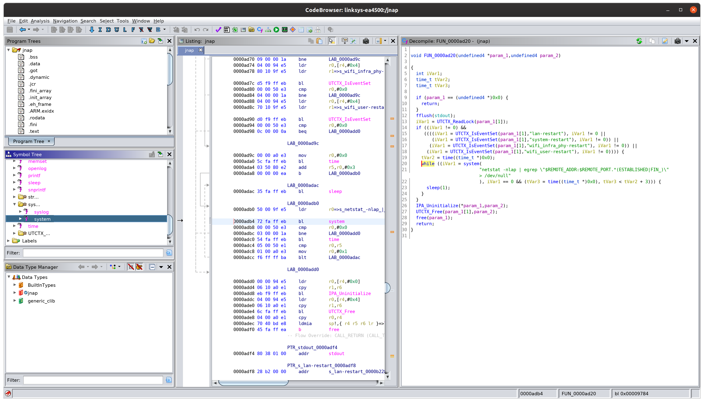
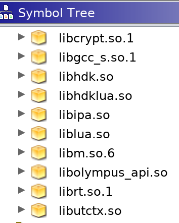

tl;dr: I was not able to identify any command injection vulnerabilities that might let me take control of the router.
The firmware is available here. The support page for this product is here. The latest firmware build for hardware version 1.0 is 2.1.42 which was released 9/19/2017. According to here this device was EOL'd in May 2014.
The dynamic portions of the web interface are handled by the /usr/sbin/jnap binary. There is exactly one instance of the system function in the entire binary:

This function is invoked whenever the LAN is restarted or when the device is rebooted, amongst others. The code looks something like this:
while ((iVar1 = system(
"netstat -nlap | egrep \"$REMOTE_ADDR:$REMOTE_PORT.*(ESTABLISHED|FIN_)\"> /dev/null"
), iVar1 == 0 && (tVar3 = time((time_t *)0x0), tVar3 < tVar2 + 3))) {
sleep(1);
}
Unfortunately CGI does not take the $REMOTE_ADDR environment variable from the HTTP Host header, otherwise we might be able to exploit this!
Since this binary is not going to get us where we need to be, I decide to check out the web root on the firmware filesystem. The webroot is at /www, but all the interesting things are at /www/ui/cgi/:
$ ls -l /www/ui/cgi/
bootloader_info.cgi* get_counter_info.cgi* getstinfo.cgi* jcgi.cgi* localize.cgi* qos_info.cgi* speedtest_info.cgi* sysinfo.cgi* usbinfo.cgi*
Then I run:
$ file /www/ui/cgi/*
www/ui/cgi/bootloader_info.cgi: POSIX shell script, ASCII text executable
www/ui/cgi/get_counter_info.cgi: ASCII text
www/ui/cgi/getstinfo.cgi: POSIX shell script, ASCII text executable
www/ui/cgi/jcgi.cgi: a /usr/bin/lua script, ASCII text executable
www/ui/cgi/localize.cgi: a /usr/bin/lua script, ASCII text executable
www/ui/cgi/qos_info.cgi: POSIX shell script, ASCII text executable
www/ui/cgi/speedtest_info.cgi: POSIX shell script, ASCII text executable
www/ui/cgi/sysinfo.cgi: POSIX shell script, ASCII text executable
www/ui/cgi/usbinfo.cgi: POSIX shell script, ASCII text executable
It looks like we have some CGI shell scripts and some CGI Lua scripts. Let's take a look at the shell scripts first.
What we are really interested in here is the HTTP POST body and the $QUERY_STRING environment variable. The HTTP POST body in CGI will come in as the first argument to the CGI shell script, so we are looking for $1 in that case. Let's do some grepping:
$ grep -rn '$1' /www/ui/cgi
www/ui/cgi/sysinfo.cgi:16: if [ "$1" == "" ] ; then
www/ui/cgi/sysinfo.cgi:20: form_var="$1"
www/ui/cgi/usbinfo.cgi:5:if [ "$1" = "" ]; then
Let's look at www/ui/cgi/sysinfo.cgi first. The interesting portion of this file is near the top:
get_cgi_val () {
if [ "$1" == "" ] ; then
echo ""
return
fi
form_var="$1"
var_value=`echo "$QUERY_STRING" | sed -n "s/^.*$form_var=\([^&]*\).*$/\1/p" | sed "s/%20/ /g" | sed "s/+/ /g" | sed "s/%2F/\//g"`
echo -n "$var_value"
}
This shell function uses the $QUERY_STRING and $1 POST body parameters. Unfortunately there is no string concatenation happening, so we are not able to inject shell meta-characters into the command.
Next's let's move on to www/ui/cgi/usbinfo.cgi. The interesting portion of the code is here:
if [ "$1" = "" ]; then
echo Content-Type: text/plain
echo ""
fi
This is a non-starter because the $1 HTTP POST parameter is not passed to any sub-command invocation or otherwised used.
There are also two lua scripts in the /www/ui/cgi directory:
www/ui/cgi/jcgi.cgi: a /usr/bin/lua script, ASCII text executable
www/ui/cgi/localize.cgi: a /usr/bin/lua script, ASCII text executable
Let's once again do some grepping. This time we will want to look for the system command invocation in lua, which is os.execute:
$ grep -rn 'os.execute' www/ui/cgi
www/ui/cgi/jcgi.cgi:99: verify(os.execute(cmd) == 0, 'ErrorCreatingArchiveFile')
www/ui/cgi/jcgi.cgi:153: verify(os.execute(cmd) == 0, 'ErrorExtractArchiveFailed')
Let's look at jcgi.cgi in more detail. There seems to be two different operating system command invocations in this CGI Lua script. The first one looks like this:
local cmd = 'tar -zcf ' .. tmpFilePath
for i = 1, #backupPaths do
cmd = cmd .. ' ' .. backupPaths[i]
end
cmd = cmd .. ' > /dev/null 2>&1'
-- Print the command and create a fake archive file if we're debugging
if os.getenv('JCGI_DEBUG') then
print(cmd)
local archiveFile = io.open(tmpFilePath, 'w')
archiveFile:write('A fake tar.gz file')
archiveFile:close()
else
verify(os.execute(cmd) == 0, 'ErrorCreatingArchiveFile')
end
This function does use string concatenation to build its command string payload, namely using the tmpFilePath variable. However, the value for this variable is defined on line 23:
local tmpFilePath = os.getenv('JCGI_DEBUG') and 'jcgi.tmp' or '/tmp/var/config/jcgi.tmp'
Even if we could inject the JCGI_DEBUG environment variable into the process, defining it would cause program execution to skip the os.execute function invocation.
Moving on to the second occurance of os.execute on line 153:
local archiveFile = io.open(tmpFilePath, 'w')
verify(archiveFile, 'ErrorWritingArchiveFile')
verify(archiveFile:write(archiveBuffer), 'ErrorWritingArchiveFile')
archiveFile:close()
-- Now delete the old IPA cache, extract the achive, and lock out the
-- IPA database until the device reboots so that we don't end up with
-- duplicate entries
local cmd = 'rm -rf ' .. ipaCachePath .. ' && cd / && tar -xzf ' .. tmpFilePath .. ' tmp/syscfg.tmp var/config/ipa && touch /tmp/ipa/.lockedout > /dev/null 2>&1'
-- Just print the command if we're debugging
if os.getenv('JCGI_DEBUG') then
print(cmd)
else
verify(os.execute(cmd) == 0, 'ErrorExtractArchiveFailed')
So in this case there are three variables which could be used to inject commands into: tmpFilePath , ipaCachePath. We already know from the first example that tmpFilePath is a no go, but let's take a look at ipaCachePath:
local ipaCachePath = '/var/config/ipa'
Unforunately this value is hard coded on line 21 to the value /var/config/ipa so there is no injection opportunity with this variable.
The last potential injection point is in the variable backupPaths, which is defined on line 21:
local backupPaths = {ipaCachePath, tmpSyscfgPath}
We know ipaCachePath is a no-go but we need to look now at tmpSyscfgPath. It is defined on line 22:
local tmpSyscfgPath = '/tmp/syscfg.tmp'
Another hard coded value. At this point we know that this instance of os.execute is not vulnerable to command injection.
At this point we have exhausted the contents of /www/ui/cgi.
There are additional lua files in /JNAP/modules/. However, they are all in Lua bytecode format. I attempted to decompile them back to Lua and had less than optimal results.
The usage of a scripting language (lua) to handle most of the dynamic web interface resulted in device firmware that was far more difficult to exploit than some of the other older models of Linksys routers. the /usr/sbin/jnap binary offloads input processing to lua by loading shared objects than then load the lua bytecode in /JNAP/modules.

Combined with the lack of a telnet daemon, command injection is not the best approach to penetrating this device. Looking for memory corruption bugs in the jnap binary would most likely be more fruitful, but then you have the problem of trying to write an exploit for a device that you don't have 1) a shell on and 2) a compiler toolchain for. It's not impossible, just very diffficult.